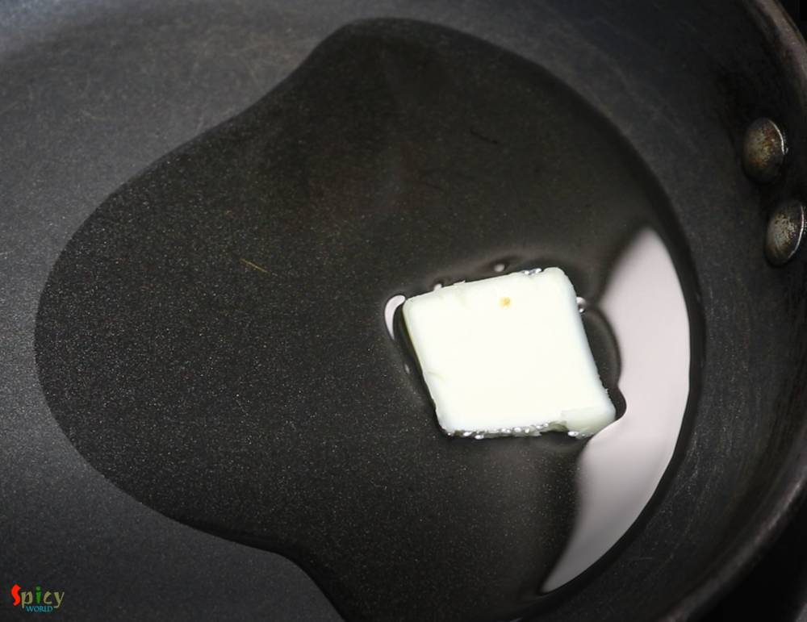

Simple and Easy Recipes
Paneer Bhurji Gravy / Crumbled Cottage Cheese Curry
© 2016 Spicy World, Published on: Dec 27, 2018
Paneer Bhurji is a delicious recipe of crumbled cottage cheese which goes best with plain chapati or paratha or pao. In this recipe, crumbled paneer will be cooked in onion, ginger, garlic, tomato based creamy sauce with some flavorful spices. This paneer bhurji gravy will take very less time to cook. Try this recipe in your kitchen and let me know how it turned out for you.

Ingredients
- 300 grams of paneer (crumbled).
- 1 small onion, thinly sliced.
- 2 Tablespoons of ginger garlic paste.
- 1 big tomato, crushed.
- 2 Tablespoons of green peas.
- Spice powder (1 Tablespoon of besan, 1 Teaspoon of turmeric powder, 1 Tablespoon of red chili powder, 1 Teaspoon of roasted cumin powder, 1 Tablespoon of roasted coriander powder).
- 1 Teaspoon of garam masala powder.
- 1 Tablespoon of kasuri methi or dry fenugreek leaves.
- 3 Tablespoons of butter.
- 3 Tablespoons of cooking oil.
- 1 Tablespoon of chopped coriander leaves.
- 1-2 green chilies, chopped.
- 1 Teaspoon of ginger julienne.
- 1 dry red chili.
- Half Teaspoon of cumin seeds.
- Salt and sugar as per your taste.
- 1/4th cup of hot water.


Steps
Heat oil and 2 Tablespoons of butter in a pan.
Add dry red chili and cumin seeds, saute for few seconds.
Add ginger garlic paste and fry for 2 minutes on low flame.
Add onion slices, fry for 3-4 minutes on medium flame.
Add all of the spice powder, cook for a minute on low flame.
Now add crushed tomato and cook for 3-4 minutes on medium flame.
For the seasoning, add some salt and sugar. Mix well.
Add crumbled paneer and green peas. Mix well for 5 minutes on medium flame.
Add hot water and cook for 5 minutes on medium flame.
Add the garam masala and kasuri methi, mix well for a minute.
Turn off the gas and add chopped coriander leaves, chopped green chilies, ginger julienne and the remaining butter. Mix well.
Your paneer bhurji gravy is ready to serve.
Serve this hot with paratha or chapati or pao.
")